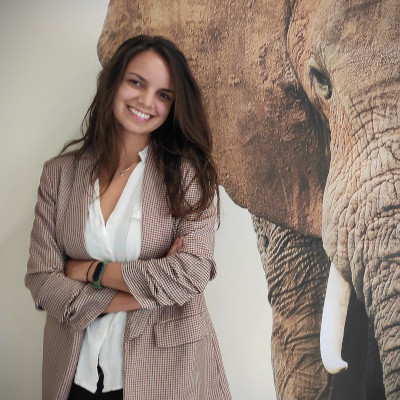

Cristina García, (Neurologopeda, nº col. 46940) logopeda
desde el 2015 graduada por la Universidad de Valencia. Actualmente
tengo el Máster de Neurologopedia por la EPL y formación con
diversas especialidades y cursos reglados. Sigo y seguiré en
constante formación tanto en patologías propias de la pediatría como
de los adultos, siempre buscando estar actualizada y preparada para
realizar la mejor valoración, diagnóstico, orientación y rehabilita-
ción a nuestros pacientes.
Me apasiona ayudar en la recuperación con pacientes que padecen daño
cerebral, enfermedades neurodegenerativas y con alteraciones de la
masticación o la deglución (deglución atípica y disfagia). También
me quedo siempre con lo que los pacientes pediátricos me transmiten
siempre, que es una energía y una felicidad que deja muy buen sabor
de boca. Sigo aprendiendo en cada sesión que cada persona es un
mundo y tiene unas necesidades, por lo que nunca se tiene que perder
las ganas de aprender de ellos, nuestros pacientes, y ayudarles a
que ellos aprendan de nosotros para mejorar su calidad de vida y
facilitarles cada cosa que les sea complicada o necesiten potenciar.
Mi Lema Que nada ni nadie te quite la sonrisa, ni siquiera una parálisis facial
